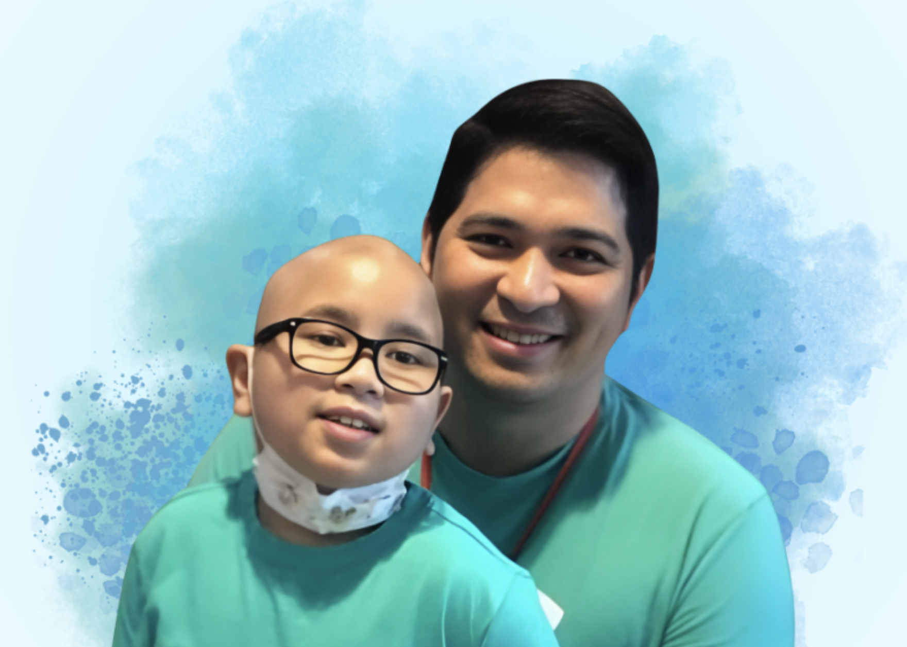

WHEN KINDNESS MULTIPLIES
Years ago, Noah was the child fighting for his life. Today, he sits beside children walking a similar journey.
His story reminds us why Little Ark exists: to give children and families care, hope, and the comfort of knowing they are not alone.
